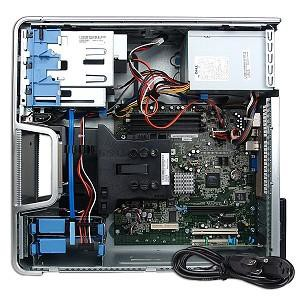

tipologie di hacking
Di seguito sono elencate alcune attività tipiche dell'hacking. Alcune di queste, se eseguite su sistemi proprietari o su cui non si è autorizzati a operare, possono comportare compromissioni, perdita di garanzia o violazione della legge (reati informatici).
Incremento di prestazioni (hardware)

I circuiti fisici di un computer funzionano secondo le leggi dell'elettronica: è possibile alterarne il funzionamento al fine di ottenere un incremento delle prestazioni. Nella pratica vengono apportati miglioramenti che, non essendo stati ancora sperimentati dal produttore, non possono essere inclusi nel prodotto al momento della vendita. Esempio di queste tecniche è il forzare un masterizzatori di CD a lavorare al doppio della velocità, rimuovendo un resistore. Altri esempi riguardano alcune schede madri di personal computer sulle quali, tramite la modifica di connettori detti jumper, si è possibile alterare i parametri di frequenza del processore installato, facendo sì che questo lavori a maggiori prestazioni. Quest'ultima pratica è chiamata overclocking (i jumper sono stati sostituiti, nelle moderne schede madri, da apposite funzioni software del BIOS anch'esse talora alterabili). L'incremento di prestazioni può tuttavia comportare un surriscaldamento eccessivo delle componenti.
Rimozione di limitazioni al funzionamento
I produttori di componenti elettronici (hardware) o di applicazioni (software) possono aggiungere ai loro prodotti funzioni, non necessariamente documentate in fase di vendita, che limitano l'utilizzo dei prodotti stessi in specifiche situazioni: ad esempio, possono essere inseriti meccanismi atti a impedire l'aggiunta al sistema di componenti non certificati, oppure atti a controllare l'originalità dei programmi utilizzati. L'elusione di tali limitazioni rientra nelle attività di hacking: in taluni casi l'azione è legale (nel caso, ad esempio, in cui si richiedano permessi di amministrazione per accedere a tutte le funzionalità del sistema operativo mobile Android), in altri casi è svolta in maniera illecita per aggirare l'acquisto delle licenze (pirateria informatica).
Alterazione della struttura di un programma
Un sistema operativo o, in generale, un qualsiasi software, si basa su una strutturata sequenza di operazioni da far compiere all'elaboratore elettronico su cui viene installato; nel caso dei programmi open source questa sequenza di operazioni è volutamente resa nota e in vari casi è anche alterabile liberamente, ma nel software cosiddetto protetto o proprietario non viene autorizzata nessuna possibilità di intervento, nemmeno al fine di correggere malfunzionamenti. Nella pratica è però possibile modificare il software portandolo ad eseguire le operazioni in una sequenza diversa da quella scelta dal produttore fino ad ottenere il "salto" (cioè la mancata esecuzione) di alcune operazioni; programmi specificatamente realizzati per alterare la struttura di un software provocando il salto delle operazioni che dovrebbero verificare l'originalità della licenza di un'applicazione vengono ad esempio chiamati crack. Questa pratica può violare la licenza di utilizzo di un software rendendone illegale l'utilizzo, anche se legalmente acquistato.
Aggiunta di funzioni ad un programma
Come ad un software possono essere tolte delle funzioni, così possono esserne aggiunte di nuove; anche in questo caso sul software protetto o proprietario tale operazione non è consentita, ma tecnicamente questa operazione è in genere possibile. Questa pratica può violare la licenza di utilizzo di un software rendendone illegale l'utilizzo, anche se legalmente acquistato.